Azovskaya has a great location since it will take around 10-60 minutes to travel across the whole city and is overall located in a place where there are many shops near home making it more convenient if you aint
a fan of transport.
The cultural landscape
The cultural landscape
Cultural landscape on Azovskaya has been severely impacted by the influx of emigrants from afghanistan, India, Pakistan and other incredibly poor countries seeking for better life opportunities. This caused a whole lot of different cultures
to combine in one place. For example in "Sevastopol" lots of foreign goods are selling for years including hookah, wiggly substances and overpriced fake clothing :). Such amounts of people coming
to Azovskaya got it pretty industrialised in the past 2 decades (The huge house is a prime example of that and it was built in around early-mid 2000's). Finally I would like to add that lots of emigrants also began to work at various
supermarkets and kiosks all over the street.
Economic opportunities
The economic opportunities on Azovskaya are generally pretty good because its around 15 minutes from the center of Moscow (if on metro) and thus it opens all sort of studying and career opportunities.
Overall the economic opportunities on Azovskaya are pretty much the same as in the whole moscow since the living price is moderate (for moscow atleast) and its generally possible to get good education or
find a proper job.
How is social life on Azovskaya?
Socialisation is probably one of the most important factors when moving or living in a specific place. If you have any people or friends to meet in moscow then it will not be an issue since since the street has 2 metro stations
and thus it wont be hard to meet that person even if they are on the other part of the city. Meeting new people on Azovskaya itself wouldnt be that hard because you will likely have frequent encounters with your neighbours
and will likely get to know them relatively quickly, most children will also find it pretty easy to find friends because the whole street has a ton of playgrounds with kids frequently visiting them. Personally
I want to add that I met some of my closest friends on Azovskaya and im especially thankfull to Леня for providing most pictures for this website and overall being a great friends.
Affect on life
Overall azovskaya doesnt have such a huge impact on the life of its inhabitats since it creates a layer of a quite and peaceful life with a good amount of opportunities and career choices.
The location is also pretty good.
Population density/restribution
The population density is basically managed amazingly on Azovskaya and in my 7 years of life there i cannot think of even one moment the street felt crowded or overfilled. This is partially due
to each appartament being respectab;y big and each flat having around 4-5 appartaments.(im talking about the home i am from which is basically the biggest building on the whole street)
"Sevastopol"
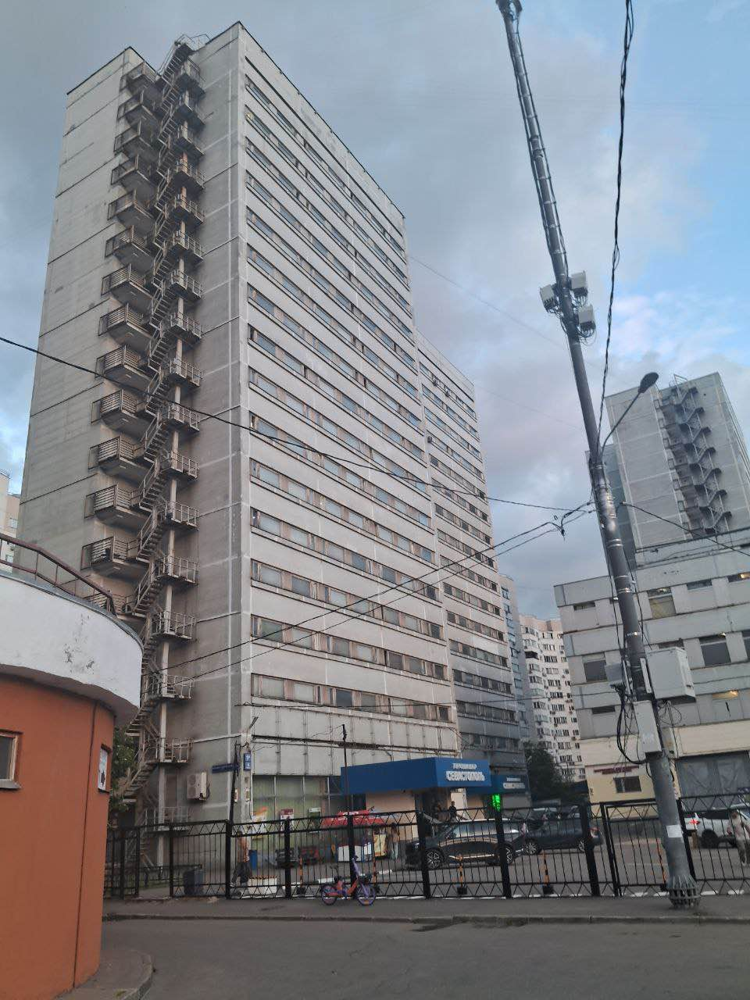
Sevastopol is a grey building from the 2000s and it is mostly occupied by foreigners who sell their goods there, also there are somteimes drug sales occuring there so i would conside it a relatively funny place.
Mall
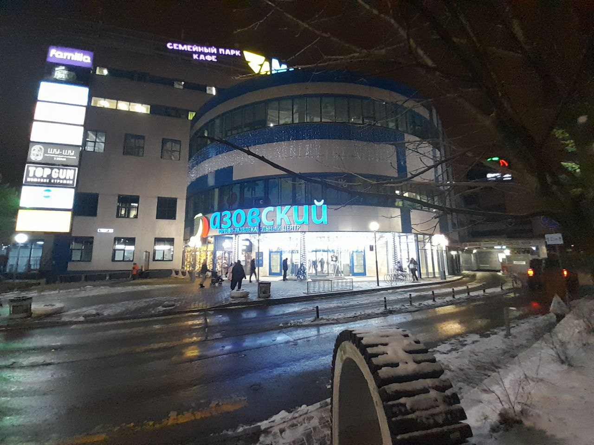
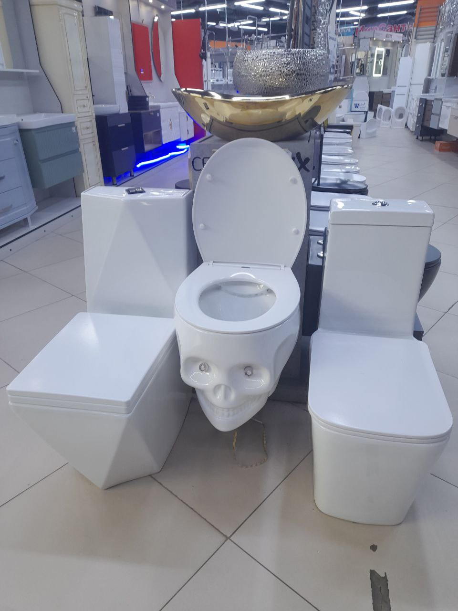
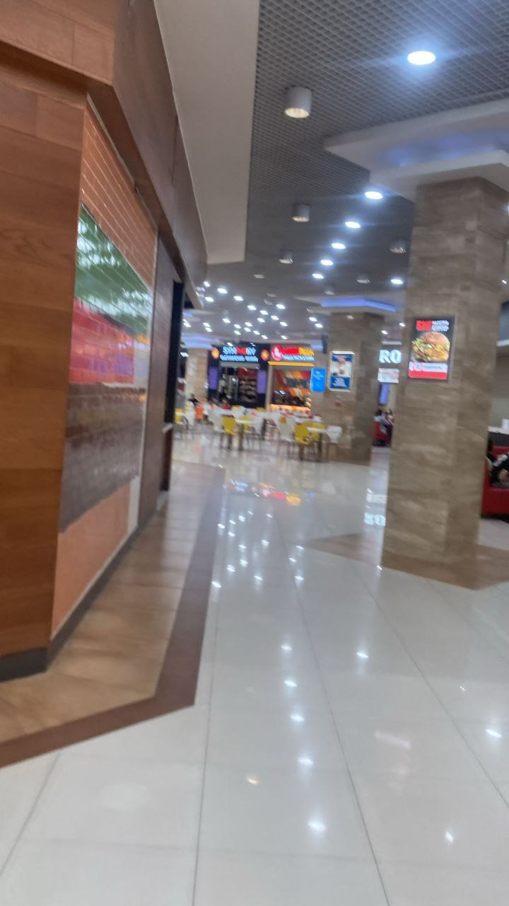
The mall isnt too far away from us (like 5 mins) and it has all sorts of things in it ranging from a tech shop to a bowling center and a quest zone, also the place includes lots of supermarkets and home appliances stuff.
New Section Title
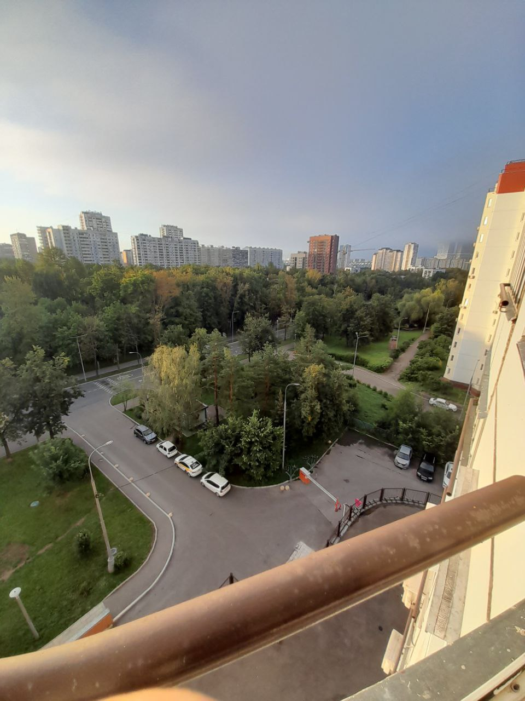
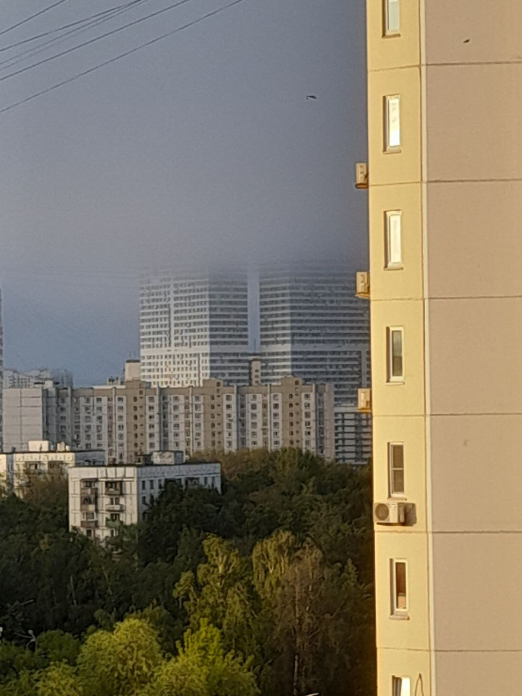
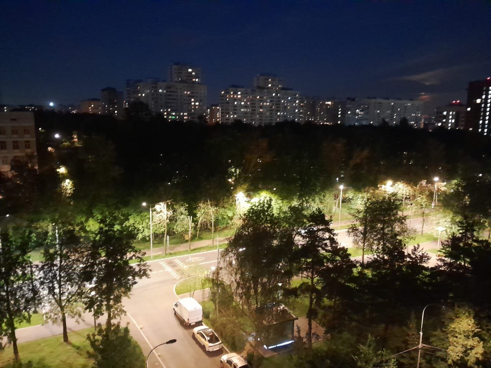
The building I and many of ma friends grew up in is massive and it has hundreads of appartaments, the images provided in this section will display a view from the window of that building.
(not relevant) Basically some pics from that and close to it streets.
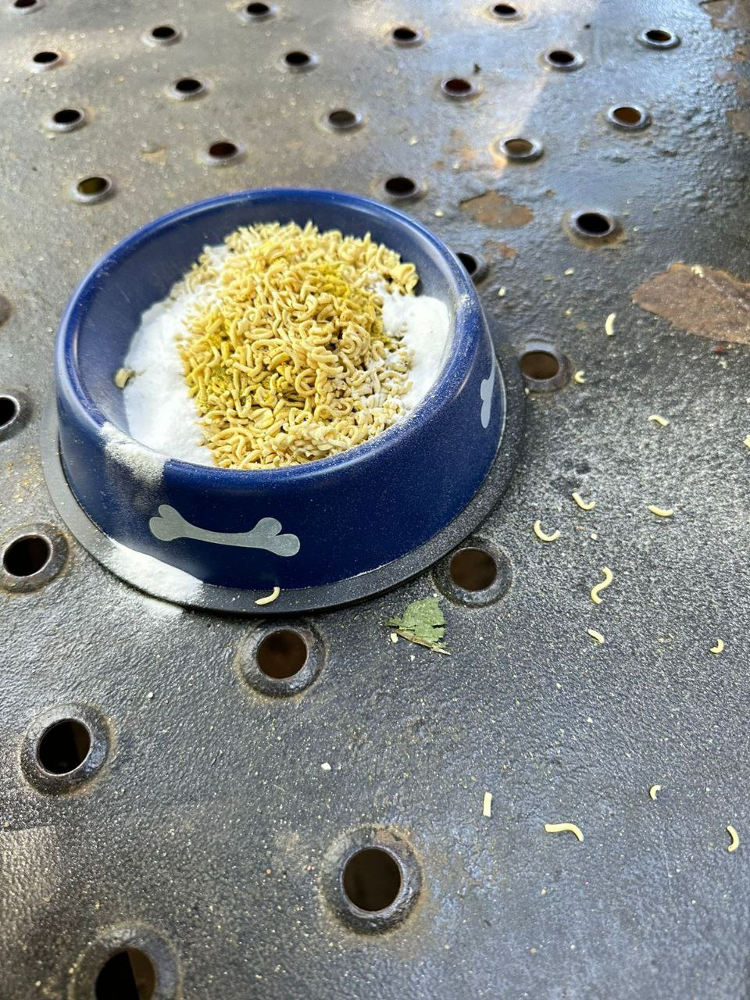
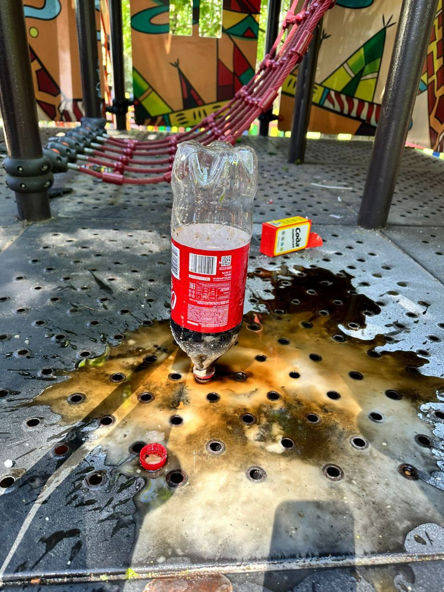
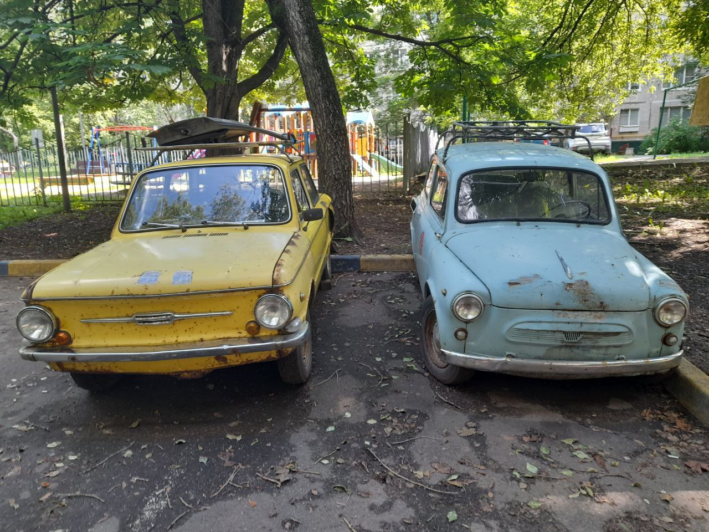
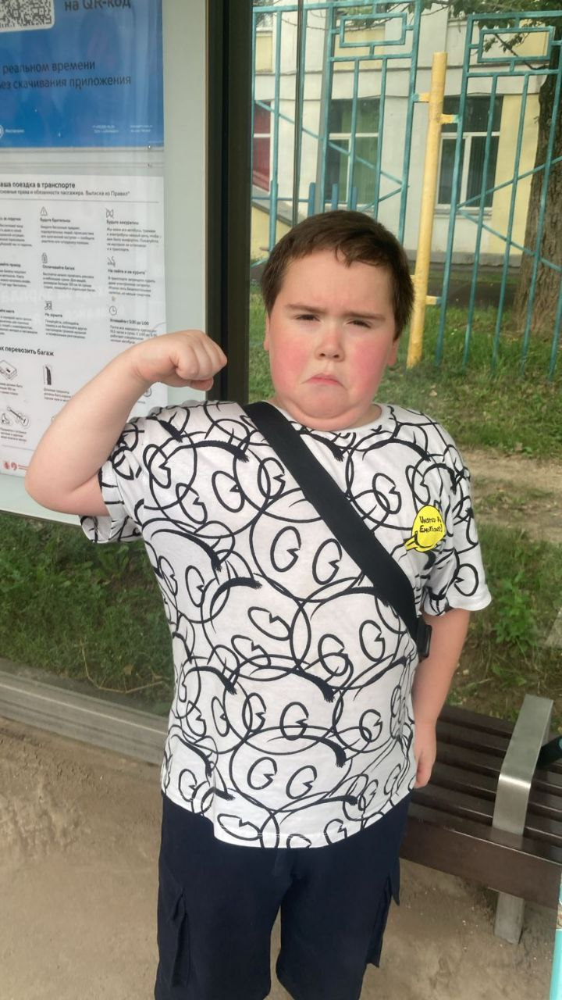
Here pictur
The biggest downsides
The biggest downside of the whole place is applicable to the whole moscow and its traffic, sometimes you can spend hours just staying in traffic if you want to leave the city which can play a huge factor in some people's lives.
Another "downside" isnt applicable to everyone but the whole street is just grey as hell, this could make the place more depressing for some ppl but personally I love it. The last downside i want to point out is
that sometimes emigrants and locals get wiggly and can create Заварушки aka just criminal activities but it happens so rarely that you will probably will not even notice it.